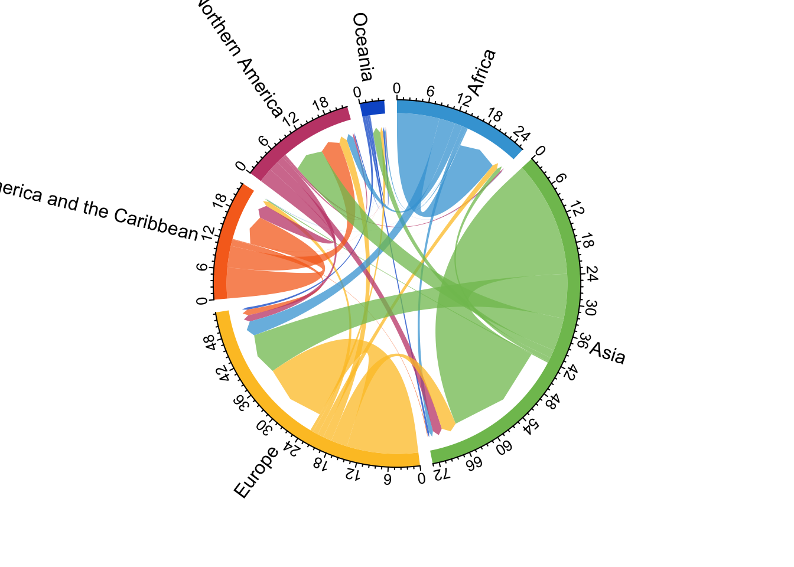

Vamos a trabajar con datos ya calculados para flujos
# para flujos datos del autor Abel and Cohen (2019) estimates# Estos cuando tengas internet se descargan así:# f <- read_csv("https://ndownloader.figshare.com/files/38016762", show_col_types = FALSE)f <-readRDS("datos/f.rds")head(f)
# Abel usa el paquete countrycode para generar regionesf %>%mutate(orig = countrycode::countrycode(sourcevar = orig, # la variable de origen que tiene códigoscustom_dict = dict_ims, # el diccionario a usarorigin ="iso3c", # el tipo de abreviaturadestination ="region")) # que nos va a regresar
# A tibble: 307,833 × 9
year0 orig dest sd_drop_neg sd_rev_neg mig_rate da_min_open da_min_closed
<dbl> <chr> <chr> <dbl> <dbl> <dbl> <dbl> <dbl>
1 1990 Africa BDI 0 0 0 0 0
2 1990 Africa BDI 0 0 0 0 0
3 1990 Africa BDI 0 0 0 0 0
4 1990 Africa BDI 0 0 0 0 0
5 1990 Africa BDI 0 0 0 0 0
6 1990 Africa BDI 30 30 75.7 51.3 207.
7 1990 Africa BDI 0 0 0 0.03 0
8 1990 Africa BDI 0 0 0 0 0
9 1990 Africa BDI 0 0 0 0.06 0
10 1990 Africa BDI 0 0 0 0 0
# ℹ 307,823 more rows
# ℹ 1 more variable: da_pb_closed <dbl>
d <- f %>%mutate(orig = countrycode::countrycode(sourcevar = orig, # la variable de origen que tiene códigoscustom_dict = dict_ims, # el diccionario a usarorigin ="iso3c", # el tipo de abreviaturadestination ="region"), # que nos va a regresardest = countrycode::countrycode(sourcevar = dest, custom_dict = dict_ims,origin ="iso3c",destination ="region") ) %>%group_by(year0, orig, dest) %>%summarise_all(sum) %>%ungroup()
Vamos a usar “2015-2020 pseudo-Bayesian estimates for plotting” de la base de Guy Abel
pb <- d %>%filter(year0 ==2015) %>%# seleccionamos un año especificomutate(flow = da_pb_closed/1e6) %>%# pasamos el flujo cerrado a milesselect(orig, dest, flow) # necesitamos un objeto con estas tres variablespb
# A tibble: 36 × 3
orig dest flow
<chr> <chr> <dbl>
1 Africa Africa 8.69
2 Africa Asia 0.896
3 Africa Europe 3.31
4 Africa Latin America and the Caribbean 0.0361
5 Africa Northern America 1.59
6 Africa Oceania 0.264
7 Asia Africa 0.907
8 Asia Asia 23.8
9 Asia Europe 9.14
10 Asia Latin America and the Caribbean 0.233
# ℹ 26 more rows
migest::mig_chord(x = pb) # objetod %>%filter(year0 ==2015) %>%# seleccionamos un año especificomutate(flow = da_pb_closed/1e6) %>%# pasamos el flujo cerrado a milesselect(orig, dest, flow) %>%mig_chord()

d %>%filter(year0 ==2015) %>%# seleccionamos un año especificomutate(flow = da_pb_closed/1e6) %>%# pasamos el flujo cerrado a milesselect(orig, dest, flow) %>%mig_chord(grid.col =c("blue", "royalblue", "navyblue", "skyblue", "cadetblue", "darkblue"))